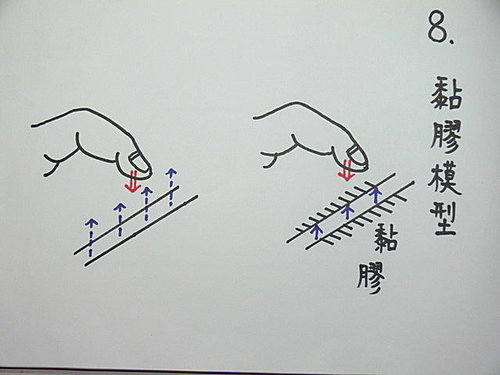
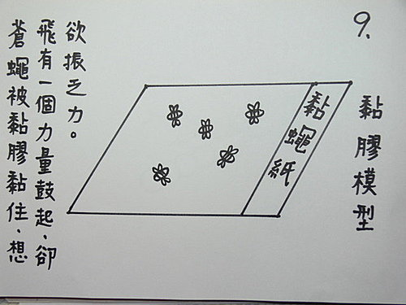
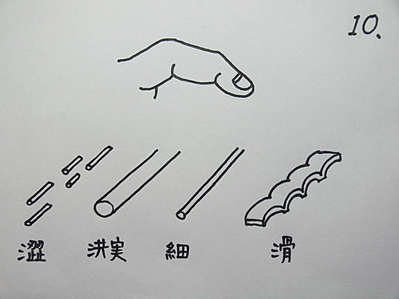

脈理醫理學 33.12：黏脈（一）
作者：陳建元
說明：
黏脈沒有單獨的脈形，只附庸在其他的脈象上，也算是一種力度的單位。〈圖8〉右邊是黏脈的模型，叫做「黏膠模型」，黏膠的意思是黏脈的感覺，就像脈管塗了膠，黏在肉裡，雖欲鼓動，卻被黏膠牽制住而鼓動不起來，那樣子的力度感覺，就叫做黏脈。〈圖9〉是另一個黏脈的模型，又像蒼蠅被黏蠅紙黏住，把手指輕輕按在蒼蠅上，就會感覺到蒼蠅想飛，卻又被黏住牽制住而飛不起來，那樣子的力度感覺，就是叫做黏脈。黏脈幾乎可以和各種脈象相合而成複合脈。〈圖10〉是表示黏脈可以和澀脈、洪實脈、細脈、滑脈等諸脈象相合。〈圖8〉是虛脈和黏脈的比較，左圖是虛脈，虛脈是自己鼓動無力，所以脈管的兩個邊緣，感覺會較模糊；右圖是黏脈，只是被黏住而鼓不起來，所以脈管的兩個邊緣，一般的感覺是比較清晰的。黏脈的意思就是脈一按，雖然可以發現脈的寬度或細如線，或寬如原子筆心，各種寬度並不等，但相同的感覺就是摸得到形，卻不太感覺在跳，而是呆呆的靜止黏在那邊。



本質和病機：
黏脈病機主毒，黏脈在何部何位明顯，就是何部何位受到毒的干擾，而導致器官或系統無法發揮正常功能或運作。
兼脈：
浮黏風寒毒。滑黏痰毒。虛黏虛毒。緩黏濕毒。洪黏熱毒。弦黏氣滯毒。澀黏瘀毒。遲黏寒毒或火毒。數黏熱毒。數虛黏虛毒。濡黏風濕毒。
六部黏脈：
右寸黏：為溫為瘟、為痛、為發熱。
右關黏：為吐、為腹瀉、為腹痛腹悶。
右尺黏：為腹痛為瀉痢。
左寸黏：為喘為胸悶、為紫癜。
左關黏：為腹脹、為兩脇痛、為目赤為目昏、為紫癜。
左尺黏：為小便不利、為水腫、為頭昏。
治療藥物：
治療的藥物是清熱解毒藥。
肺脈：魚腥草、七葉連、金銀花。
脾脈：蒲公英。
心脈：連翹。
肝脈：連翹、金菊花、七葉連。
腎陰腎陽：白花蛇舌草、白頭翁、六月雪、馬齒莧。
本條要和脈理醫理學 37：補足古人未曾補足的脈象、脈理醫理學 38：失落的黏脈互看。
‥‥‥‥‥‥‥‥‥‥‥‥‥‥‥‥‥‥‥‥‥‥‥‥‥‥‥‥‥‥‥‥‥‥‥‥
或問：
藥王脈學你好，有一個問題想請教，是不是黏脈都需要處理，有些是不是只要調節有問題的地方，身體會自己將毒廢物（黏脈）代謝掉，如果可以，又應該怎麼去拿捏哪一些需要處理！
答：
您好。「毒」字這個病機， 可以為第一病機，也可以為第二病機。可以由外來，也可以由自體產生，可以為急性的毒，也可為慢性的毒。譬如外感「溫毒」，發病可以為甚急的法定傳染病，而脈象上會出現黏脈為主，這個時候，發病甚急，這個毒是外來的，很明顯的，這個外來的毒，已經超過身體能負荷的限度，所以發病了，黏脈是鼓不動，可知身體所受的衝擊很大，可推測這種脈象很容易會發燒起來，其傳變與《傷寒論》中一開始的脈浮緊，或溫病書中的一開始的脈浮滑數有別。當在這個時候，毒是第一次病機，也是急性毒，整個發病的環節以它為中心，所以治則以解毒攻下效果最快，以風寒、風熱來醫效果不佳，因為病機並不是它們。
如果是現今食品添加物或污染化學物等過量，進入人體後，則是蓄積成慢性毒；另外機體自身的氣虛、陽虛、陰虛、血虛、痰濕、陽亢‥‥‥等病機，因為都會導致整體或局部代謝的不順暢，不順暢代表代謝廢物的貯留，這也算是慢性毒，算是第二次病機，是由氣虛、陽虛、陰虛、血虛、痰濕、陽亢、氣滯‥‥‥等第一次病機轉化出來的，然後第一、二次病機又會狼狽為奸，互相轉化，虛損則毒更盛，毒更盛則更虛損。
當毒只有少量或初起的時候，調節有問題的地方（譬如補氣補陽補血補陰、化痰、理氣、去瘀‥‥‥），身體會自己將毒廢物（黏脈）代謝掉，但當毒力大到一個程度會出現黏脈或久蓄之後，這個時候若是以加強正氣來處理，反而只會化火生痰，並無法除掉蓄毒，這是因為毒也有容易壅塞絡道的特性。有的人會說正氣足則邪自去，但這是有前提的，譬如要把物資送去地震現場來救難，但問題是這些毒瘀等路障已經先阻於道路，物資根本送不進去。所以一般在處理上，扶正氣與解毒須同時進行，一個抓頭，一個抓尾，一個解毒，一個扶正，這樣效果才會明顯。
【引用請先來信告知徵求同意，若有涉及販售營利等商業行為，版權所有拷貝盜用必究。】
【藥王脈學講壇】http://blog.xuite.net/drjychen/twblog